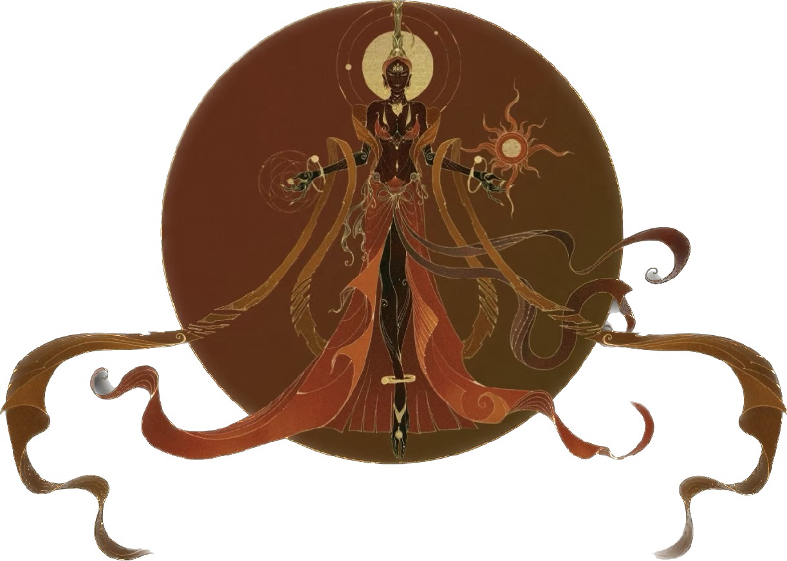
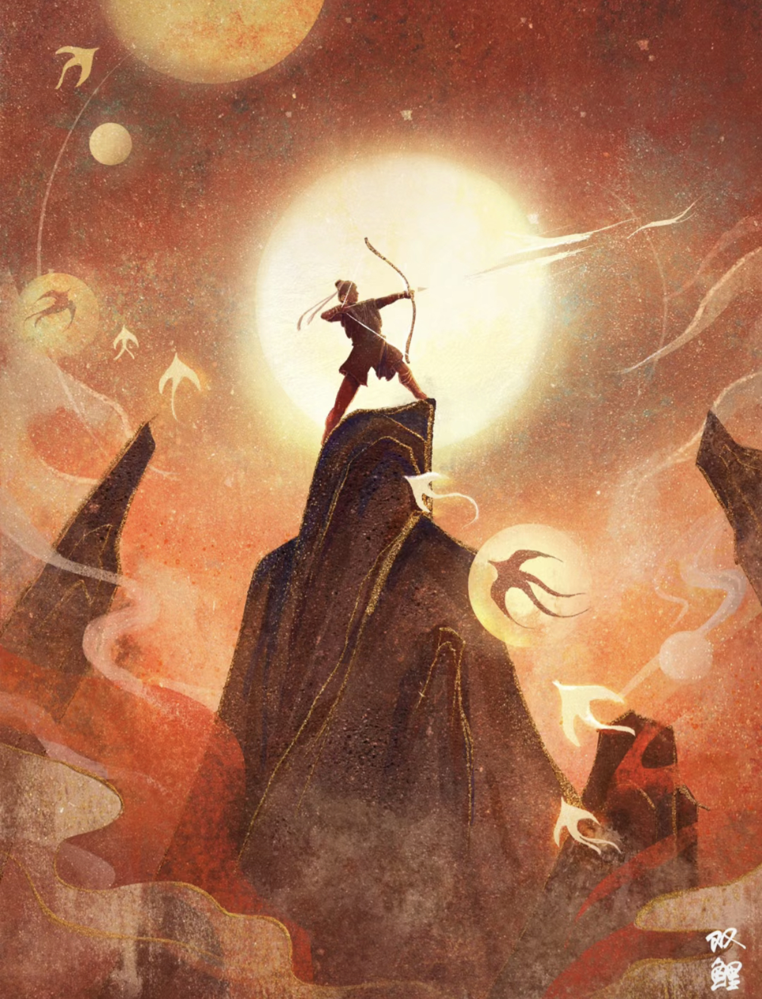

is the mother of Suns. She gave birth to 10 suns.
Ten suns slept under the Fusang tree, everyday one sun came out in turn to bring the world light.
One day, Ten Suns came out together, bringing severe drought on the land. In order to save people from the drought and heat, Houyi shot the nine Suns down with his bow and arrow.
Nine suns turned into three-legged golden crows and died. In the end, there was only one sun left in the sky, so the people hailed Houyi as a hero.
In the northern wilderness, there lived a group of mighty giants. Their leader was Kuafu. One year, the sun scorched the crops, the trees, and dried up the rivers. Kuafu saw this scene very sad, he said: "The sun is really hateful, I want to catch the sun, and let it listen to the command." After hearing this, the clansmen dissuaded them.
However, Kuafu made up his mind and vowed to catch the sun. Kuafu ran after the sun, seeing closer to the sun after nine days and nine nights, where the sun set, Kuafu finally caught up with it. But the sun was extremely hot, Kuafu felt thirsty and tired. He ran to the Yellow River and drank it dry. He ran to the Weihe River and drank up the water, but he still could not quench his thirst. Kuafu ran to the north again, there were thousands of miles of Daze (the sea), Daze water enough Kuafu quenched his thirst. However, Kuafu died of thirst on the way to Daze.
 Sky
Sky Sun
Sun Moon
Moon